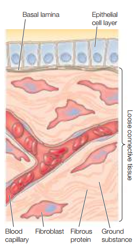
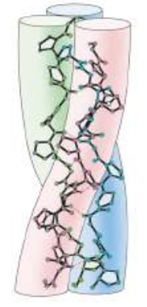
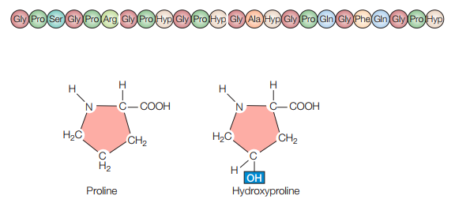
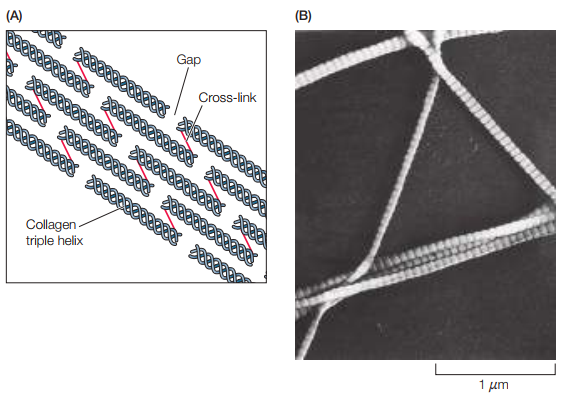
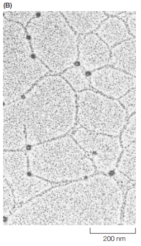
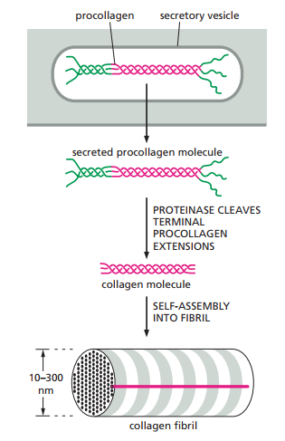
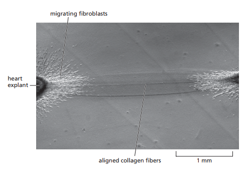
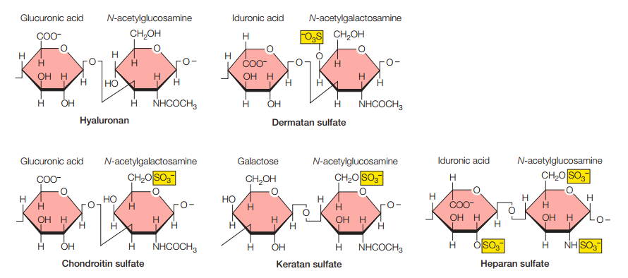
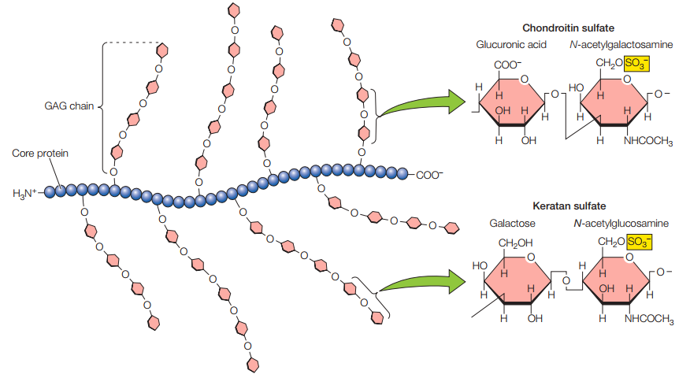
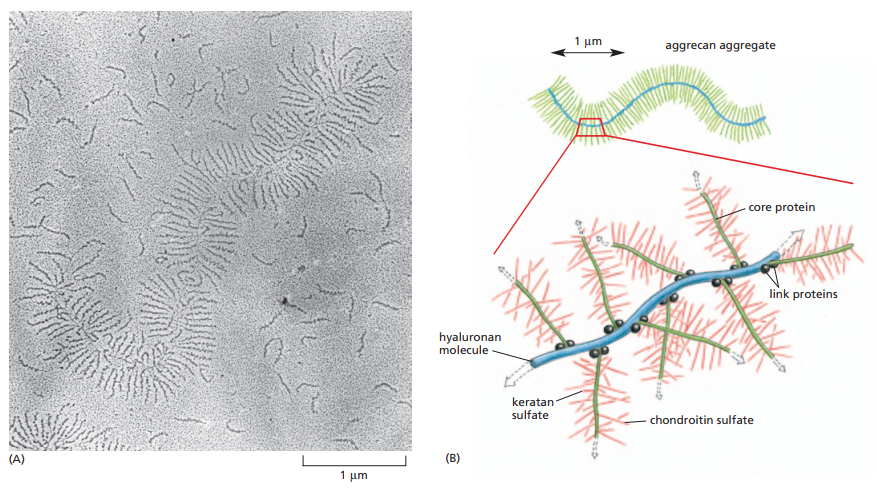

APÉNDICE SOBRE FISIOLOGÍA CELULAR
Uniones celulares y matriz extracelular, parte I-B: Matrices extracelulares
Gran parte de las células animales en tejidos están embebidas en matrices extracelulares (MECs). Estas matrices llenan el espacio entre células, así como también unen células y tejidos. Asimismo, estas consisten de proteínas y polisacáridos secretados y existen en diferentes variantes.
A modo de ejemplo, las láminas basales son un tipo de matriz extracelular que sirve como cimiento para las células epiteliales. Estas también rodean los miocitos, adipocitos y nervios periféricos.
Ahora bien, las MECs son más comunes en tejidos conectivos, v. gr., el tejido conectivo laxo bajo las capas de tejido epitelial consiste de una matriz extracelular habitada por fibroblastos. Otros tejidos conectivos como los huesos, tendones y cartílagos también se constituyen principalmente de MEC.
Figura 1. Ejemplos de matriz extracelular (Cooper, 2019, p. 544).
Las MECs se compone de proteínas fibrosas y duras embebidas en una sustancia polisacárida gelatinosa. A su vez, posee proteínas de adhesión que enlazan componentes de la matriz entre sí y con otras células (uniones célula-matriz). Las uniones célula-matriz serán discutidas en una entrada separada.
Las diferentes MECs varían de al menos dos formas:
A modo ilustrativo, mientras que los tendones tienen grandes proporciones de proteínas fibrosas, los cartílagos tienen altas concentraciones de polisacáridos que forman una gel resistente a la compresión. En el hueso, la MEC es endurecida por el depósito de cristales de fosfato de calcio que no se encuentran en la MEC de otros tejidos.
El colágeno es la proteína estructural más importante de las MECs, y también la proteína más abundante en los tejidos animales. Existen más de 40 tipos de colágeno. Estos se caracterizan por la formación de hélices triples (Figura 2) donde tres cadenas de polipéptidos están enrolladas como una cuerda. La triple hélice consiste de repeticiones en la secuencia de aminoácido Gly-X-Y. Mientras que normalmente la prolina toma la posición X, la hidroxiprolina tiende a tomar la posición Y. Sin embargo, esto puede variar (Figura 3).
Figura 2. Triple hélice de Gly-X-Y que forma el colágeno (Cooper, 2019, p. 545).
Figura 3. Ejemplo idealizado de una secuencia de aminoácidos de una hélice de Gly-X-Y, donde Gly-X-Y se repite y normalmente Pro ocupa la posición X mientras que Hyp ocupa Y (Cooper, 2019, p. 545).
Cabe resaltar que la hidroxiprolina se forma en el retículo endoplásmico a partir de residuos de prolina. Por otro lado, los residuos de lisina también son convertidos en hidroxilisina. Por último, los grupos hidroxilos permiten la estabilización de las triples hélices a través de los puentes de hidrógeno que se forman entre sus tres cadenas constituyentes.
El colágeno varía en su función según su tipo. Acá solo se estudiarán dos ejemplos:
Colágeno tipo I: Componente estructural básico de tejidos conectivos. Consisten normalmente de 1000 aminoácidos o 330 repeticiones de Gly-X-Y. Se ensamblan en fibrilos de colágeno luego de ser secretados por la célula que los produce. Al ensamblarse en fibrilos, las triples hélices forman arreglos en zig-zag (Figura 4).
Figura 4. (A) Las moléculas de colágeno se ordenan en zigzag al ser secretadas para formar fibrilos. Las moléculas se solapan para dejar agujeros entre los extremos N-terminales y C-terminales. (B) Micrografía electrónica de fibrilos de colágeno en zigzag (Cooper, 2019, p. 546).
Cabe resaltar que los fibrilos de colágeno son manojos de colágeno en formas de triple hélices. Tiene 10-300 nm de diámetro y alcanzan los micrómetros en longitud. A su vez, los fibrilos pueden organizarse en fibras de colágeno (Figura 5).
Figura 5. Organización de las fibras de colágenos en manojos de fibrilos, los cuales, a su vez, se componen de haces de triples hélices de colágeno y micrografía electrónica de las fibras (Alberts et al., 2014, p. 689).

Colágeno tipo IV: Es el colágeno que forma las láminas basales. En este, las repeticiones de Gly-X-Y son frecuentemente interrumpidas por cortas secuencias no-helicoidales, lo cual le otorga mucho más flexibilidad. Se organiza en redes entrecruzadas bidimensionales (Figura 6).
Figura 6. Estructura de red entrecruzada bidimensional del colágeno tipo IV (Cooper, 2019, p. 546).
Otros tipos de colágenos forman anclajes entre las láminas basales a tejidos conectivos subyacentes. Otros, además, funcionan como proteínas transmembrana que participan en interacciones célula-matriz. Ahora bien, independiente del tipo de colágeno, todos estos comparten una función común, que es la de proveer fuerza tensil al tejido, o la fuerza para resistir la extensión.
Por último, además del colágeno, los tejidos conectivos poseen otras proteínas como la elastina. Estas son el componente principal de las fibras elásticas abundantes en órganos que regularmente se estrechan y luego regresan a su forma original, como los pulmones.
Las células que producen los componentes de la matriz extracelular se distribuyen de manera dispersa a lo largo de esta. Alberts et al. (2014, p. 688) emplean la metáfora de las “pasas” en un “pudín” para referirse a cómo estas células están distribuidas a lo largo de una matriz, siendo las células las pasas y la matriz el pudín.
Dependiendo del tejido conectivo, recordando que puede ser la gel de los ojos, los tendones, el cartílago, los huesos, etc., las células productoras de los componentes de la matriz reciben nombres diversos. Se mencionan solamente dos:
La mayoría de las moléculas se sintetizan intracelularmente y se secretan a través de exocitosis. Extracelularmente, estas moléculas se ensamblan de las maneras ya discutidas: los colágenos forman hélices triples y luego fibrilos, posiblemente organizándose en fibras ulteriormente. Los polisacáridos, a tratar en la siguiente sección, se forman como cadenas lineales en el caso del hialuronano mientras que los otros polisacáridos pertinentes a la matriz forman proteoglicanos junto con proteínas centrales fuera de la célula. Eventualmente, tanto las cadenas polisacáridas de hialuronano como los proteoglicanos se forman en complejos más grandes.
Para evitar que el colágeno se forme en fibrilos dentro de la célula, los colágenos son fabricados en una forma precursora llamada procolágeno, con extensiones peptídicas en cada terminación. Estos péptidos son descartados por enzimas llamadas procolágeno proteinasa, las cuales se ubican fuera de la célula (Figura 7).
Figura 7. Los precursores precolágeno son hendidos para formar colágenos maduros fuera de la célula (Alberts et al., 2014, p. 690).
Cabe resaltar que una vez el procolágeno es producido, secretado y liberado de sus terminaciones peptídicas, aun queda la cuestión de cómo se orienta. Distintas formas de colágeno se ordenan de maneras diversas, como ya se resaltó. Los fibroblastos juegan este papel. No solamente producen el colágeno, sino que lo ordenan. De acuerdo con Alberts et al. (2014), los fibroblastos se arrastran hasta el colágeno que secretan y lo “halan” para compactarlo y formarlo como cables. En experimentos de culturas celulares, dos piezas separadas de tejido embrionario que contengan fibroblastos son colocadas en una gel de colágeno desorientado. Al pasar el tiempo, es posible observar el colágeno previamente desarreglado formarse como bandas densas de fibras alineadas conectando ambos explantes.
En estos casos, los fibroblastos migran de los explantes a lo largo de las fibras de colágeno para alinearlos, lo cual quiere decir que, así como los fibroblastos influyen en la orientación del colágeno, las fibras en sí mismas afectan la distribución de fibroblastos a lo largo de la matriz (Figura 8).
Figura 8. Micrografía electrónica exhibiendo cómo los fibroblastos influyen en la alineación de las fibras de colágeno (Alberts et al., 2014, p. 691).
En palabras de Alberts et al. (2014):
"This micrograph shows a region between two pieces of embryonic chick heart (rich in fibroblasts, as well as heart muscle cells) that have grown in culture on a collagen gel for four days. A dense tract of aligned collagen fibers has formed between the explants, presumably as a result of the fibroblasts, which have migrated out from the explants, tugging on the collagen. Elsewhere in the culture dish, the collagen remains disorganized and unaligned, so that it appears uniformly gray" (Alberts et al., 2014, p. 691).
Las proteínas estructurales fibrosas (como el colágeno y la elastina) existen en un medio gelatinoso compuesto de polisacáridos, los cuales son conocidos como glicosaminoglicanos (GAG). Los GAGs son unidades repetidas de disacáridos compuestos de N-acetilglucosamina (el mismo que participa en los peptidoglicanos de las paredes celulares bacterianas) o N-acetilgalactosamina y un azúcar acídico, bien sea ácido glucurónico o ácido idurónico. La Figura 9 recoge los tipos de glicosaminoglicanos más frecuentes.
Figura 9. Tipos de glicosaminoglicanos más comunes (Cooper, 2019, p. 547).
La gran mayoría de los GAG están negativamente cargados por la presencia de un grupo sulfato, con la excepción del hialuronano. Esto les permite atrapar moléculas de agua para formar geles hidratados a través de la atracción de cationes, lo cual también le da soporte mecánico a la matriz extracelular. Sin embargo, mientras que el soporte mecánico del colágeno es contra la extensión, los GAG proveen resistencia contra la compresión.
A modo de resumen, los glicosaminoglicanos (GAGs) se componen de disacáridos con:
Las características generales de los GAG son:
El hialuronano es el único glucosaminoglicano que ocurre como una larga cadena individual de polisacáridos, producido por la enzima transmembrana hialuronano sintasa. Por otro lado, el resto de las GAGs son enlazadas a proteínas para formar proteoglicanos (Figura 10). Por peso, los proteoglicanos se constituyen de 95% de polisacáridos.
Figura 10. Esquematización idealizada de un proteoglicano (Cooper, 2019, p. 548).
Los proteoglicanos se componen de normalmente más de 100 cadenas de GAGs enlazadas a residuos de serina de una proteína central. Asimismo, muchos proteoglicanos interactúan con el hialuronano para formar complejos más grandes en la matriz extracelular, los cuales se ilustran en la Figura 11. Sus cargas negativas son las que permiten la atracción de nubes de cationes como el Na+, lo cual, a su vez, facilita la atracción de moléculas de agua para formar presión de hinchamiento. Esta presión es balanceada por la tensión del colágeno, haciendo que la matriz sea dura, resiliente y resistente a la compresión como a la extensión en diferentes medidas según la proporción de ambas estructuras (tanto peptídicas como polisacáridas).
Figura 11. Micrografía electrónica de un agregado de proteoglicanos y GAGs de cartílago sobre una superficie plana y esquematización idealizada de las relaciones entre los GAGs como el hialuronano y los proteoglicanos. Los proteoglicanos funcionan como ramificaciones de las cadenas polisacáridas de hialuronano (Alberts et al., 2014, p. 693).
Alberts, B., Bray, D., Hopkin, K., Johnson, A., Lewis, J., Raff, M., Roberts, K., & Walter, P. (2014). Essential cell biology (4th ed.). Garland Science
Cooper, G. M. (2019). The cell: A molecular approach (8th ed.). Oxford University Press
Freddy J. Molero-Ramírez
fmolero@mail.uniatlantico.edu.co